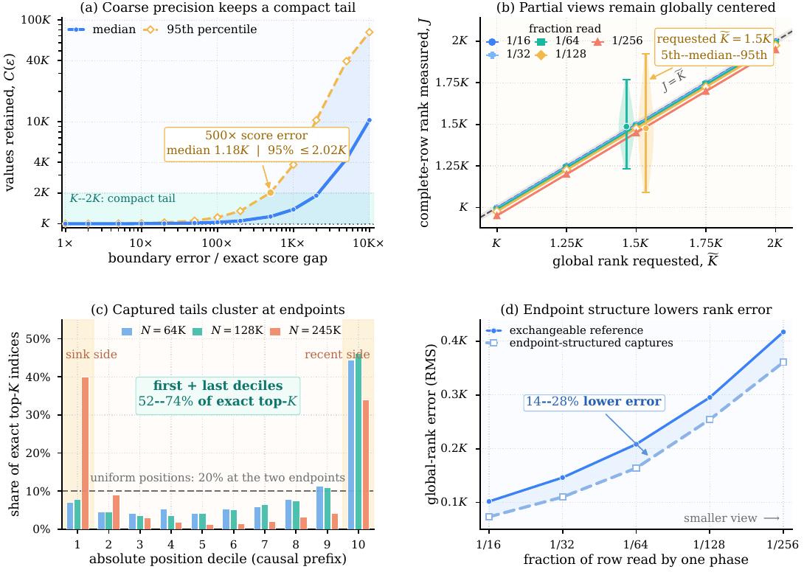
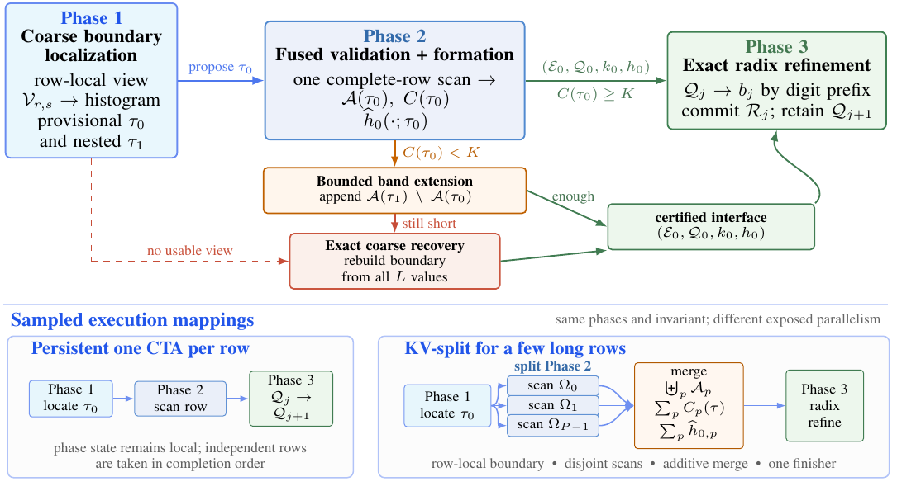
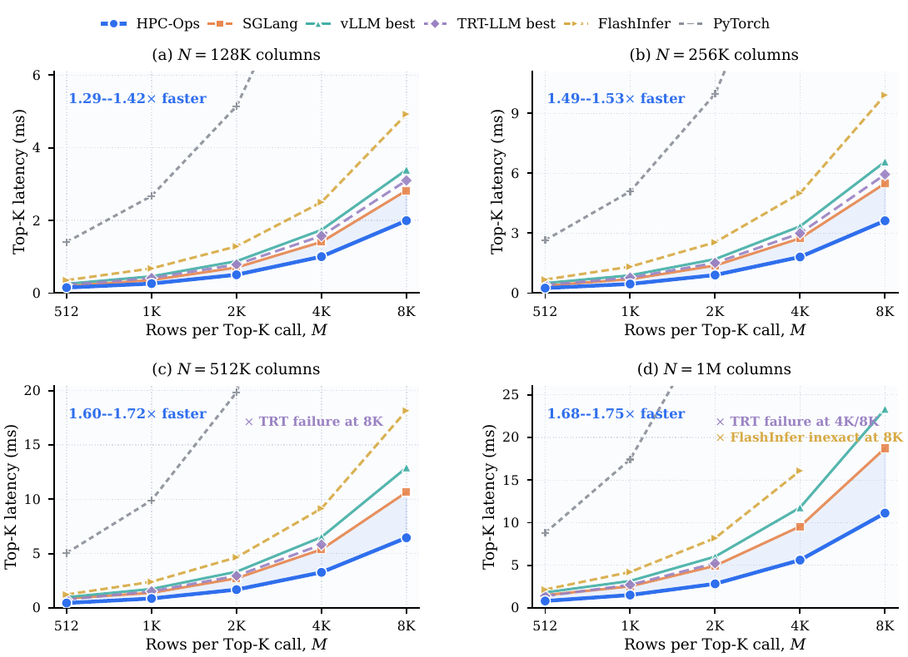
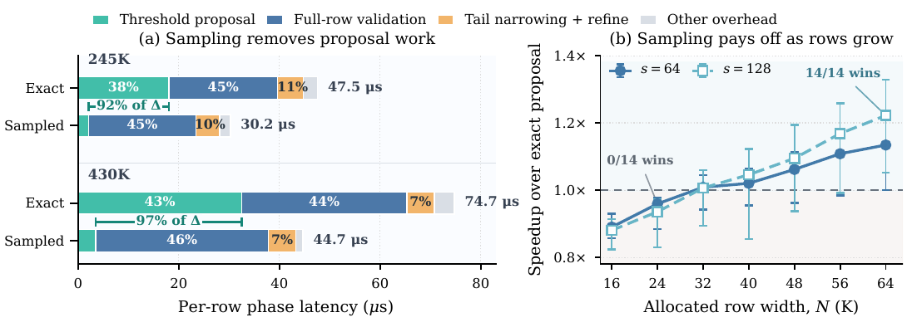

Sample-Guided Exact Top-K Selection for Long-Context Sparse Attention
長上下文稀疏 attention 雖把後段計算限制在固定 (K) 個 token，獨立的 exact Top-K 仍必須檢查整列分數；傳統 radix selector 更因第一個可用邊界出現太晚，通常還要再掃一次長列。HPC-Ops Top-K 先用目前列的固定步距樣本提出粗邊界，再以一次完整列 traversal 認證候選集合，最後只對未決 frontier 做 FP32 radix refinement；抽樣只決定工作量，不決定答案。
在單張 NVIDIA H20、\(K=2048\) 與 Hy4-Preview indexer scores 上，方法於 20 組 operator shapes 全部最快，相對最佳 verified exact baseline 為 1.29–1.75×；兩條 framework-derived traces 為 1.36× 與 1.48×。主要邊界是：證據只涵蓋一個模型的分數分布、一種 GPU 與超長列，尚不能直接外推到其他 \(K\)、GPU 或完整模型端到端 latency。 §6.1–6.4 · PDF pp.20–25 · Figs. 7–12
文章目錄
要先分清：稀疏 attention 省的是後段，Top-K 仍要看完整長列
這一章先排除一個常見誤解：把 attention 做成 sparse，不代表「挑出哪些 token」也自動變成固定成本。本文研究的是已經 materialize 完整分數矩陣之後的 standalone exact Top-K；只有把這個 operator contract、ragged rows 與 radix selector 的工作方式分清楚，才看得出作者究竟省了哪一段流量。
從 indexer 到 sparse attention：三個物件、三種成本
| 階段 | 輸入與輸出 | 成本如何隨上下文成長 |
|---|---|---|
| Indexer | 對每個 query 與歷史 token 計算 FP32 relevance score，形成分數列。 | 仍須覆蓋所有有效位置，列長為 \(L_r\)。 |
| Exact Top-K | 從 materialized score row 選出 \(K\) 個 distinct indices。 | 即使 \(K\) 固定，未排序列仍至少要檢查一次完整 \(L_r\)。 |
| Sparse attention | 只讀被選出的 key/value 與索引。 | 後段工作由固定 \(K\) 限制，不再線性依賴完整 \(L_r\)。 |
作者主張DeepSeek Sparse Attention、GLM-5.3 與 Hy4-Preview 這類設計先產生完整 score row，再由 Top-K 回傳 indices 給主 attention；因此本文優化的是既有矩陣上的 selector，而不是 score producer 或 attention kernel 本身。 §2.1 · PDF p.3 · Eq. 1
Operator contract：exact 的意思不是輸出排序，而是不能漏掉更大值
\(M\) 是 score rows 數、\(N\) 是配置後且可能 padding 的寬度、\(L_r\) 是第 \(r\) 列真正有效的長度。當 \(L_r>K\)，輸出 \(K\) 個 distinct valid indices，且任何未選值都不能大於已選值；第 \(K\) 名同分時不要求固定 index permutation。當 \(L_r\le K\)，所有有效 indices 都要返回，其餘位置填 sentinel \(-1\)。輸入限定為 FP32、無 NaN，\(\pm\infty\) 與 subnormals 依數值次序處理。 §2.1 · PDF p.3
Rows 是 ragged：同一個 prefill chunk 內，各列受到 causal mask 影響而有不同 \(L_r\)。實作還必須容許 padded pitch、CUDA Graph capture、無 host-side runtime readback，以及不隨 batch 無界成長的 workspace；這些 serving 約束會排除一些理論上可用、但需要把整列留在 shared memory 或動態重啟 kernel 的作法。 §2.1 · PDF p.3
用 row-equivalent traffic 看清 selector 的下限
\(b_s\) 是一個 materialized score 的 bytes，\(b_a\) 是 sparse attention 對一個已選位置所讀的 logical bytes，\(R_{\mathrm{eq}}\) 則把 global score reads 換算成「掃完整有效列幾次」。任意未排序列若要求 exactness，至少必須看過所有有效值一次，所以 \(R_{\mathrm{eq}}=1\) 是 traffic floor；當 \(K\) 固定時，任何額外完整 traversal 的代價都隨 \(L/K\) 線性放大。 §2.1 · PDF pp.3–4 · Eqs. 2–4
下個問題因此不是「能不能完全不掃列」——exactness 不允許——而是：為何 production radix 在不可避免的一掃之外，又多付了一次 row-scale reread？
真正的瓶頸不是「一定要掃一遍」，而是 radix 太晚才知道邊界
理解障礙在於把 radix 的「多輪」一概當成演算法常數。作者指出真正穩定、跨實作的結構性成本是 boundary timing：第一輪 digit histogram 沒有完成前，selector 根本不知道 rank \(K\) 落在哪個 bucket，因此第一遍遇到的 scores 還不能被分類為 candidate 或 discard。
第一個可行邊界總是在整列已經流過之後才出現
Production radix 先把所有 \(L\) 個 ordered keys 累積進 digit histogram，再 prefix-scan 找到包含第 \(K\) 名的 bin。邊界此時才可用；若沒有保存 row-sized copy，就必須重讀 score row 來 classification 與 compaction。後續 round fusion 可以把「依既有邊界分類」與「建立下一 digit histogram」重疊，卻無法把尚未存在的第一個邊界移到首次 scan 之前。 §2.3 · PDF pp.6–7 · Fig. 2
這使 optimization target 很精確：不是取代 exact full-row inspection，而是設法在那次 inspection 開始前，先取得一個只需「夠寬」而不必「完全精準」的 upper-tail boundary，讓首次遇到每個 score 時就能完成 verify、collect 與 leading-histogram work。
現有 exact selector 各自用別的資源換掉流量
| 機制 | 代表代價 | 為何不直接解掉本文長列問題 |
|---|---|---|
| Ordered state / bitonic queue | 可達一次 scan，但維護 \(O(\log^2K)\) ordered state。 | shared-memory/register footprint 限制 rank；論文整理的實作在 \(K\approx256\) 之後 radix 反而占優。 |
| On-chip threshold search | 整列留在 shared memory 後反覆測 threshold。 | 既有評估是數百到數千元素；本文數十萬到百萬欄的列放不進 CTA-local storage。 |
| Delegate / sampled reduction | 先花少量工作縮小 exact backend 的 candidate set。 | 效能取決於 intermediate tail 大小；若 boundary 太緊或資料偏斜，就需 recovery。 |
| Temporal prediction | 用先前 invocation 推測 threshold。 | 依賴可重用歷史；跨 invocation、離線 replay 或分布變動時不穩定。 |
作者主張缺少的組合是：支援超長 ragged rows、規則 GPU 執行、只依當前 row、不改 exact semantics，而且 row-equivalent traffic 接近一次有效列 scan。 §2.2 · PDF pp.4–6 · Fig. 1、Table 1
由系統限制反推四項需求
- Early but coarse：完整 scan 前就要有可採取行動的 boundary，不要求它等於 exact \(K\)th cutoff。
- Authoritative full check：sampling error 只能增加工作量，不能改變回傳 indices 的合法性。
- Regular and graph-stable：ragged lengths、CUDA Graph replay 與固定 workspace 下仍須可部署。
- Shape-aware：sampled path 只應服務足夠長的 rows；短列或 row-level parallelism 不足時要有其他 exact mapping。
只要 early boundary 不必精準到分辨第 \(K\) 與第 \(K+1\) 名，問題就從「抽樣能不能猜中答案」改寫成「抽樣能不能穩定圈住一個小而足夠的 superset」。
為什麼只看每 128 個分數之一，仍能安全縮小候選尾端？
最容易誤解的地方是把 sampling 當成 approximate Top-K。HPC-Ops 的 sample 從不直接產生答案；它只提出一個 coarse cutoff，真正的 correctness 仍由完整列認證與 FP32 refinement 決定。直覺可由一個 \(L=430\text{K}\)、\(K=2048\) 的 score row 開始。
一個具體 walkthrough：抽 1/128，只找「約第 3072 名」的門檻
令 retention target \(\widetilde K=1.5K=3072\)，stride \(s=128\)。固定 residue class 只讀約 \(L/s\) 個 scores，並在這個 view 中取第 \(q=\lceil\widetilde K/s\rceil=24\) 大的 coarse key；若 positions 對 global ranks 大致 exchangeable，這個 sample order statistic 的完整列 rank 會落在 \(\widetilde K\) 附近。它刻意比 \(K\) 深，留出 estimation margin：後續完整 scan 只要認證 cutoff 以上至少有 2048 個值，就知道 exact Top-K 一定包含在候選集合內。 §3.1–3.3、§4.2 · PDF pp.8–10, 12 · Eqs. 8, 13–15
若候選不足，系統不會「將就」：先用同一 sample histogram 中預先記下的 \(1.75K\) 次級 boundary 擴張；仍不足才回到 exact coarse recovery。若候選過多，只有 frontier refinement 多做一些工作，輸出依然 exact。這就是 proposal 與 proof 的分工界線。
為何粗得多仍有用：需要的是 compact tail，不是 exact gap
\(\delta\) 是 exact boundary 的相鄰 score gap，\(\epsilon\) 表示把 cutoff 向下移多少個 gap，\(C(\epsilon)\) 是留下的完整列 tail 大小。在局部 score density 平滑的近似下，作者推得 \(C(\epsilon)-K\approx\epsilon\)：邊界誤差放大幾百個 exact gaps，通常只是多留幾百個 values，而不是把工作量乘上幾百倍。這是設計直覺，不是對任意 adversarial row 的保證；保證來自後續認證。 §3.1–3.2 · PDF pp.8–10 · Eqs. 5–7
實驗事實在三組 Hy4-Preview captures 中，cutoff 偏移 500 個 exact gaps 時，retained tail 的 median 為 \(1.18K\)，95th percentile 不超過 \(2.02K\)。對 requested rank \(1.5K\)，1/64 views 的完整列 rank 介於 \(1.23K\)–\(1.77K\)（5th–95th percentile），1/128 views 則為 \(1.09K\)–\(1.92K\)；這說明估計有 dispersion，但尺度仍是 \(O(K)\)，不是 \(O(L)\)。 §3.1 · PDF pp.8–9 · Fig. 3a–b
{kind=link}

規則取樣的統計基線，以及它停止精確之處
\(J_a(q)\) 是 residue phase \(a\) 中第 \(q\) 大 sample 在完整 row 的 rank，\(n_a\approx L/s\)。在 positional exchangeability 下，它的期望自然對準 requested global rank，view 變稀時誤差只以平方根尺度增加。實際 captures 的 top-K indices 有 52%–74% 落在第一與最後 position deciles，讓 RMS rank error 比 exchangeable reference 再低 14%–28%；但其他模型若沒有 attention-sink/recency 端點結構，這份額外收益可能消失。 §3.1–3.2 · PDF pp.8–10 · Fig. 3c–d · Eqs. 8–9
直覺成立後，下一章只需追蹤一個不變量：sampled boundary 可以錯，但進入最後 refinement 的 state 必須已被完整列證明「足夠且不漏更大值」。
HPC-Ops 如何把估計、認證與精確選擇拆成三段？
這一章要解決的障礙是：如何讓一個可能偏鬆或偏緊的 sampled boundary，最後仍等價於 standalone exact Top-K。答案不是要求 proposal 永遠命中，而是讓三個 phase 各自只承擔一種責任，並以共同的 certified interface 銜接。
{kind=link}

Phase 1：用低解析度 key 提出兩個 row-local boundaries
每個 FP32 score 先 round-to-nearest 投影成 FP16，再取 descending sortable key 的最高 11 bits，得到 2048 個 coarse bins \(c(x)\)。這個 map 是 monotone but many-to-one：更大 score 不會落到更差 bin，但不同 FP32 值可共用一 bin；因此它適合界定 candidate membership，不足以決定最終次序。 §4.2 · PDF p.12 · Eqs. 11–12
第 \(r\) 列以 deterministic balanced phase \(a_r=\pi_s(r\bmod s)\) 讀取固定 residue class \(V_{r,s}\)，避免全資料集偏好同一 offset。sample histogram 的 inclusive prefix 在 requested sample rank \(q=\lceil\widetilde K/s\rceil\) 首次達標的 bin 定義 \(\tau_{0,r}\)；預設 \(\widetilde K=1.5K\)，同一次 prefix scan 也記錄 \(\widetilde K_1=1.75K\) 的 \(\tau_{1,r}\)。若 view 太短而無法到達 requested rank，直接走 exact route。 §4.2、§5.2 · PDF pp.12, 16–17 · Eqs. 13–15
Phase 2：完整列只掃一次，同時驗證、收集與建立第一個 exact histogram
由 monotonic coarse key 可知，若 \(C(\tau)\ge K\)，任何 admitted value 都不小於任何 excluded value，所以 \(A(\tau)\) 必含一個 exact Top-K solution。完整列 count 是 sufficiency certificate；它與 sample quality 無關。 §4.3 · PDF p.13 · Eq. 16 · Lemma 4.1
Kernel 在同一次 full-row pass 中，直接用原始 FP32 score 對 coarse-bin 的 FP32 endpoint 做比較；每個 admitted score 立刻保存 index、增加 \(C(\tau_0)\)，並更新 FP32 ordered key 的 leading-digit histogram \(\widehat h_0\)。這正是作者要消除的時序差：boundary 在 scan 之前已存在，所以首次遇到 score 就能 classification 與 candidate formation。 §4.3、§5.3 · PDF pp.13, 17–18 · Eq. 17
若 \(C(\tau_0)=K\)，候選本身即為答案；若大於 \(K\)，進入 exact refinement。若小於 \(K\)，只追加 \(\tau_0
Phase 3：用 11+11+10 bits 精煉，永遠只攜帶唯一 boundary group
FP32 descending ordered key 被拆成三個 digits。第 \(j\) 輪對 \(Q_j\) 建 histogram，prefix count 找出包含剩餘 quota \(k_j\) 的 boundary digit \(b_j\)；所有更好的 groups 直接 commit 成 \(R_j\)，更差者丟棄，只把等於 \(b_j\) 的 group 帶到 \(Q_{j+1}\)。三輪走完後，\(Q_D\) 內為相同 FP32 ordered key，依 tie contract 任取剩餘 indices 即可。 §4.4 · PDF p.14 · Eqs. 22–25 · Theorem 4.2
FP16 projection 不會降低 exactness，因為它只決定初始 superset；完整列 certificate 防止 underfill，FP32 digits 決定最終 strict ordering。可失敗的是 performance——例如 candidate tail 過大或 recovery 太常發生——不是 correctness。
同一 invariant，依 shape 選不同 GPU ownership
- Persistent sampled：有足夠 rows 時，一個 512-thread CTA 從 Phase 1 到 3 擁有一列；後續 rows 由完成較早的 CTA 透過 device counter 領取，吸收 raggedness。
- Sampled KV-split：只有少數長列時，用 2/4/8 CTAs 掃不重疊 segments，各自輸出 candidates、counts 與 histograms；最後到達的 CTA 當 finisher，做 additive merge 與 refinement。
- Direct exact：較短 rows 或 sampling 無法 amortize 時，用 row-local 1024-thread CTA，或以 eight-CTA cluster 處理少數長列。Host planner 在 graph capture 前依 \(M,N\)、pitch 與 device capability 固定 mapping 與 workspace，replay 時不需 host readback。
分析這個 portfolio 是論文不可省略的一半：抽樣演算法只在長列有利，真正可部署的系統必須把「何時不用它」也納入設計。 §4.5、§5.5 · PDF pp.14–15, 18–19 · Fig. 6
Traffic accounting：common path 接近一掃，但 recovery 有清楚價格
Primary certified path 讀 \(L/s+L\)，所以 refinement 前 \(R_{\mathrm{eq}}=1+1/s\)。次級 band 多一個 \(L\)；exact recovery 再多兩個 \(L\)。在 KV-split 中 \(P\) 個 CTAs 會各自重建 view，aggregate traffic 變成 \(1+P/s\)，換來 validation critical span 約縮短到 \(L/P\)。 §4.6 · PDF pp.15–16 · Eq. 28–29 · Table 2
方法的正確性來自 invariant；方法是否值得，則要看 sample overhead、recovery rate 與被省掉的 row-scale proposal traversal 在真實 shape 中誰更大。
從 128K 到 1M 欄，少一次長列 traversal 帶來多少速度？
這一章要避免只記住「最高 1.75×」：論文有三層 claim-test——standalone operator matrix、framework-derived trace、以及控制 downstream selector 不變的 mechanism ablation。把 setup、結果與 caveat 綁在一起，才能知道 gain 來自哪裡、又何時消失。
共同實驗基準：單一 H20、固定 \(K=2048\)、逐列 exact verification
| GPU | NVIDIA H20，78 SMs，96 GiB |
|---|---|
| 資料 | Hy4-Preview indexer 產生的 FP32 scores；保留 native ragged row lengths |
| Selection | Exact Top-K，\(K=2048\) |
| Software | CUDA 12.8、PyTorch 2.11.0+cu128、CUTLASS Python DSL 4.5.0 |
| Timing | CUDA events、CUDA Graph repeated measurements、per-call median；排除 input preparation、allocation、reference construction、correctness checks 與 one-time compilation |
| Baselines | vLLM、TensorRT-LLM、SGLang、FlashInfer、PyTorch；每個 shape 取該 family 中通過 exactness 的最快 entry point |
所有輸出都需滿足：indices distinct 且在 valid prefix；\(L_r>K\) 時，selected minimum 不小於 unselected maximum；boundary ties 可任選但不能用 tolerance 放寬。Dense-only interfaces 先將 invalid suffix 全部 mask 成 \(-\infty\)，length-aware paths 則直接吃原始 \(L_r\)。作者也固定報告各實作 commit，讓比較至少在 source version 上可重現。 §6.1 · PDF pp.20–21 · Eq. 30 · Table 3
Claim-test 1：長列越寬，避免 full-row boundary localization 的收益越大
實驗事實Operator matrix 組合 \(M\in\{512,1024,2048,4096,8192\}\) 與 \(N\in\{128K,256K,512K,\sim1M\}\)，共 20 shapes。HPC-Ops 全部通過 exact verification 且全部最快；相對最佳 external exact baseline，128K 欄為 1.29–1.42×、256K 為 1.49–1.53×、512K 為 1.60–1.72×、1M 為 1.68–1.75×，geometric mean 為 1.55×。 §6.2 · PDF pp.21–22 · Fig. 7
SGLang 在 20 shapes 中有 18 個是最快 external baseline；最長 widths 且 \(M=512\) 的兩點由 TensorRT-LLM decode 勝出。TensorRT-LLM GMEM-spill 另外配置 \(2MN\) 個 32-bit entries，於較大矩陣出現 OOM；FlashInfer 在 1M、8K rows 的點未通過 exactness，所以缺點不是以較慢數字補畫。這些 missing outcomes 應與 latency curve 一起讀。 §6.2 · PDF pp.21–22 · Fig. 7
{kind=link}

Claim-test 2：framework shape sequence 中仍有 1.36×–1.48×，但全鏈效益小得多
在 vLLM-based scheduling 中，245K 與 430K requests 分別形成 4 / 7 scheduler steps，因 score-matrix workspace 再切成 26 / 71 次 Top-K invocations。相較最快 external exact baseline SGLang，trace-level Top-K latency 從 77.15 降到 56.53 ms（1.36×），以及從 233.50 降到 158.12 ms（1.48×）。較長 trace 的後期由更寬 rows、較少 rows per call 主導，因而更符合 sampled path 的 activation regime。 §6.3 · PDF pp.21–23 · Fig. 8
實驗事實把 selector 接在相同 DeepGEMM FP8 MQA score producer 後並放進同一 CUDA Graph，Top-K segment 由 27.41 降到 18.15 ms、38.01 降到 24.06 ms；然而 score-and-select chain 只由 339.99 降到 330.84 ms，以及 488.01 降到 474.70 ms，約各節省 2.7%。而且這個 timed chain 不包含其他 model layers。 §6.3 · PDF p.22
分析因此「Top-K operator 1.5×」不應轉述成「LLM inference 1.5×」。這篇論文證明的是一個逐漸變重要的 critical-path segment 被有效縮短；端到端 TTFT、TPOT 或 request throughput 仍須由完整 runtime integration 另測。
Claim-test 3：控制其餘 selector 不變後，92%–97% 的差異確由 boundary proposal 解釋
Retention margin ablation 在 \(s=128\) 時顯示：\(\widetilde K=K\) 讓約三分之一 rows 進 exact recovery；提高到 \(1.5K\) 後，recovery 降至 0.40% 與 0.86%，並到達 1.51× 與 1.54× 的 latency knee。固定 \(\widetilde K=1.5K\) 再掃 stride，\(s=16\) 雖幾乎不 recovery，卻只約 1.05×；\(s=128\) 最平衡，\(s=256\) 因 recovery 升到 2.48%–3.26% 而退步。 §6.4 · PDF pp.23–24 · Figs. 9–10
同一 histogram 的 \(1.75K\) secondary target 把 residual exact-recovery rate 進一步壓到 0.015% 與 0.060%，解決 93%–96% primary misses；對受影響 rows，coarse rescue 比 full exact recovery 少 61%–62% latency。 §6.4 · PDF pp.24–25 · Fig. 11
實驗事實Matched control 保持 downstream exact selector 與 \(\widetilde K=1.5K\) 相同，只替換 exact vs. sampled proposal。245K / 430K 的 proposal time 約由 18 / 33 µs 降至 2 / 3.5 µs，分別解釋 92% / 97% 的 per-row latency 差異；complete terminal steps 為 1.79× / 1.78×。 §6.4 · PDF p.25 · Fig. 12a
{kind=link}

Activation sweep 也阻止過度外推：16K 與 24K 欄時 exact proposal 在全部 14 workload cells 取勝；32K–56K 結果混合；64K 時 sampling 才在全部 14 cells 取勝，median speedup 為 1.13×（\(s=64\)）與 1.22×（\(s=128\)）。 §6.4 · PDF p.25 · Fig. 12b
證據支持「超長 materialized rows 上的 exact Top-K traffic optimization」，但模型、GPU 與完整 serving objective 的外部效度仍須另行檢驗。
Exactness 很扎實，但結論能外推到哪些模型與 GPU？
這一章要回答的不是「數字好不好看」，而是哪些結論已被設計與實驗共同支撐。本文最強之處是把 correctness 與 performance risk 明確分離；最弱之處則是外部效度：同一組 Hy4-Preview scores 與單一 H20 同時支撐了 intuition、policy tuning 與主要結果。
證據鏈真正扎實的三點
- Exactness 不押在統計假設上。Sample 只 proposal；完整列 count、monotone admitted set 與 FP32 digit refinement 才構成 proof。即使 endpoint concentration 在別的模型消失，也只會讓 candidates / recovery 變多，不會默默回傳 approximate answer。 §4.3–4.4 · PDF pp.13–14 · Lemma 4.1、Theorem 4.2
- Baseline correctness 被逐 shape 驗證。作者沒有把 inexact 或 OOM 點當作可比較 latency，並對五個外部 families 取通過 contract 的最快 entry point；source commits 與 timing boundary 也都有交代。 §6.1–6.2 · PDF pp.20–22
- 機制 attribution 不只靠 scaling trend。Matched exact-proposal control 固定後段 selector，直接把 92%–97% latency difference 定位到 boundary localization；短列 crossover 也誠實顯示 sampling 不是普遍較快。 §6.4 · PDF p.25 · Fig. 12
外推時必須保留的六個界線
Model distribution
分析Motivation、policy 與 evaluation 都來自 Hy4-Preview indexer-score captures。跨 DeepSeek、GLM、不同 layer / head、decode-only 或輸入分布 shift 時，sample rank dispersion、endpoint geometry 與 recovery rate 可能不同。
Hardware portability
只測 NVIDIA H20、CUDA 12.8。2048-bin shared histogram 的 atomic pressure、CTA residency、128-bit loads、cluster / DSM 路徑與 crossover 都是 architecture-sensitive；論文沒有 AMD ROCm、NVIDIA Blackwell 或多世代 GPU 結果。
Rank specialization
實驗固定 \(K=2048\)。作者明確說不同 \(K\) 需重新校準 \(\widetilde K\)、stride、candidate budget 與 sampled/direct dispatch；proof 不變，但 performance constants 不會自動沿用。 §4.6、§6.1 · PDF pp.16, 20
Pipeline boundary
本文假設 FP32 score matrix 已 materialize，且輸入無 NaN。LiteTopK / StreamIndex 這類把 selection 融進 score production 的系統改變了 optimization boundary，可能直接避免完整矩陣；HPC-Ops 對已有 standalone interface 最有價值。 §2.1、§7 · PDF pp.3, 25–26
End-to-end impact
Score-and-select chain 只節省約 2.7%，且不含其他 model layers；論文未提供完整請求的 TTFT、TPOT、throughput、energy 或 cost。Operator gain 不能直接改寫成 serving gain。 §6.3 · PDF p.22
Statistics and review status
作者詳述 warmup、conditioning 與 repeated medians，但主要 operator plots 未提供跨 runs 的 variance / confidence intervals；score captures 也不是多模型樣本。本文是 arXiv v1，論文未提供正式 conference / journal acceptance。
最可信的結論是「對 H20 上 Hy4-Preview 的超長 FP32 materialized score rows，sample-guided proposal 可在不改 exactness 下顯著降低 standalone Top-K latency」。較寬泛的「長上下文 sparse attention 都能得到相同比例效益」目前仍超出證據。
這些限制不削弱核心模式；反而指出下一步應把 proposal/certificate 分工移植到不同 distribution 與 hardware，並讓 dispatch 以完整 pipeline objective 而非單一 kernel latency 決策。
可複用的原則：讓 cheap proposal 決定工作量、full check 決定正確性
這一章把論文從一個 Top-K kernel 提煉成可重用的 systems idea：當 exact solution 很貴時，cheap signal 不必被要求「直接答對」，只需把 common-path work 壓小；另一個 authoritative pass 負責證明、修復與封住 correctness。這種 separation 讓 aggressive optimization 的風險可量化成 recovery cost。
三個可複用的設計原則
- Proposal 決定工作量，certificate 決定合法性。可把 sample、history、learned predictor 或低精度 proxy 放在前端，只要後端有完整且便宜的 sufficiency check，預測錯誤就能降級成多做工作。
- 先找 \(O(K)\) frontier，再在 frontier 內 exact。不要用粗訊號分辨最困難的 \(K\) / \(K+1\) gap；讓它只負責把 \(O(L)\) active set 收斂到 \(O(K)\)，再把精度與排序資源集中到唯一 boundary group。
- Recovery 必須是 policy 的一級公民。主路徑速度、underfill rate、rescue cost 與 shape crossover 要一起調；沒有 direct-exact fallback 的 sampling kernel 不是完整 serving component。
值得優先做的後續實驗
Cross-model distribution shift
推測在 DeepSeek-V3.2、GLM-5.3、不同 indexer layers 與 decode traces 上，記錄 sample-rank error、candidate size 與 recovery rate；把「端點集中」與「exchangeable baseline」拆開驗證，才能知道目前 \(s=128,\widetilde K=1.5K\) 有多少是 model-specific。
AMD GPU port
推測在 ROCm / AMD Instinct 上重做 2048-bin histogram、candidate append、persistent CTA 與 multi-workgroup split；以 LDS 容量、wavefront width、atomic throughput 與 occupancy 重新建 cost model，而不是直接照搬 H20 cutoff。
Adaptive but graph-stable dispatch
分析以 capture-time shape、近期 device-side counters 或少量固定 policy variants，同時最小化 \(L/s\)、candidate refinement 與 recovery。關鍵限制是保持 CUDA/HIP Graph replay 的 launch geometry 與 workspace contract 可預測。
Fuse across the producer boundary
推測把 coarse sample 或 leading histogram 部分融進 MQA score producer，可能再省一次 sample read；但必須比較 fused producer 對 register pressure、occupancy、memory footprint 與 offline replay/debuggability 的代價。
Serving objective
分析用 end-to-end TTFT、TPOT、goodput、HBM footprint 與 energy 驗證 activation policy。當 Top-K 只占全鏈一小部分時，較複雜 kernel portfolio 是否仍值得，應由請求級收益而非 microbenchmark speedup 決定。
研究小組可直接討論的問題
- 若 score positions 有週期性結構，固定 residue sampling 會不會產生 alias？randomized-but-replayable phase 或多相位 sample 的保險成本是多少？
- 能否在線估計 candidate-tail size 與 underfill risk，卻不引入 host synchronization 或破壞 graph capture？
- 對 \(K\neq2048\)、mixed precision scores 或有 NaN 的 producer contract，哪些 proof interface 必須改、哪些只需改 policy constants？
- 若把 selector 融進 indexer，可否保留本文的「exact certificate + bounded recovery」，同時消除 materialized FP32 matrix？
- 在不同 GPU 上，何時 replicated \(P/s\) sampling traffic 值得換取 KV-split 的 \(L/P\) validation span？能否用解析 occupancy model 取代手調 shape map？
論文資訊、術語與關鍵證據索引
本節集中正式 metadata、本文使用的符號與可回查的關鍵 evidence locations。所有數字均以 arXiv v1 的 PDF 頁碼定位，便於回到原文確認條件與上下文。
書目與分類
- 正式題名
- Sample-Guided Exact Top-K Selection for Long-Context Sparse Attention
- 作者
- Siran Liu、Yang Xue、Theo Tang、Changxu Shao、Qian Cheng、Haimeng Ren、Donghua Jiang、Haipeng Ming、Lehua Ding、Zhonghan Lin、Shengying Wei、Wei Liu、Kai Liu、Jianchen Zhu
- 公開版本
- arXiv:2609.08450v1 [cs.DC]，submitted 2026-09-08；論文未提供正式 venue 或 DOI
- 全文
- arXiv PDF v1 · 開啟本地 PDF
- 頁數
- 共 28 頁
- 程式碼
- Tencent HPC-Ops；論文實驗使用 commit
f39028d - 分類
- 分析AI Infrastructure / GPU Attention Kernels。主貢獻是 materialized sparse-attention score rows 上的 exact Top-K GPU algorithm、kernel mappings 與 shape-stable dispatch，不是模型架構或一般 serving scheduler。
術語速查
- \(L_r\)
- 第 \(r\) 個 score row 的 valid length；rows 因 causal mask 而 ragged。
- \(K\)
- 要回傳的 indices 數；本篇所有主要實驗固定為 2048。
- \(R_{\mathrm{eq}}\)
- global score reads 除以 valid row length 後的 row-equivalent traffic；exact selector 下限為 1。
- \(\widetilde K\)
- sampled coarse boundary 的 requested complete-row rank；預設 \(1.5K\)，不是最終輸出數量。
- \(\tau_0,\tau_1\)
- sample histogram 產生的 primary 與 secondary coarse boundaries。
- \(A(\tau)\)
- coarse key 不差於 threshold \(\tau\) 的 admitted candidate set。
- \((E_j,Q_j,k_j,h_j)\)
- FP32 radix refinement 的已 commit prefix、唯一 frontier、剩餘 quota 與當前 digit histogram。
- CTA
- Cooperative Thread Array（CUDA thread block）；persistent path 由一個 CTA 擁有一列。
- KV-split
- 少數超長 rows 時，讓多個 CTAs 掃不重疊 segments，再由 finisher 合併 certified state。
關鍵證據索引
- 問題與 traffic floor：standalone exact Top-K contract、ragged / graph requirements，以及 \(R_{\mathrm{eq}}\ge1\)。 §2.1 · PDF pp.3–4 · Eqs. 2–4
- Radix structural reread：第一個 histogram 完成前無 boundary，分類必須重讀或保留 row-sized state。 §2.3 · PDF pp.6–7 · Fig. 2
- Sampling intuition：粗 boundary 仍留 compact tail，regular views 的 order statistic 對準 global rank。 §3.1–3.2 · PDF pp.8–10 · Fig. 3 · Eqs. 5–9
- End-to-end exactness：admitted-set containment、underfill recovery 與三 digit FP32 refinement。 §4.1–4.4 · PDF pp.11–14 · Fig. 4 · Lemma 4.1、Theorem 4.2
- GPU mappings / complexity：persistent、KV-split、direct-exact dispatch 與 recovery traffic。 §4.5–5.5 · PDF pp.14–19 · Table 2、Figs. 5–6
- Operator matrix：20 shapes 皆最快，1.29–1.75×、geometric mean 1.55×。 §6.2 · PDF pp.21–22 · Fig. 7
- Framework traces：245K / 430K Top-K traces 1.36× / 1.48×；score-and-select chain 約節省 2.7%。 §6.3 · PDF pp.21–23 · Fig. 8
- Ablation 與 crossover：margin、stride、conditional rescue、92%–97% mechanism attribution，以及 16K–64K activation range。 §6.4 · PDF pp.23–25 · Figs. 9–12